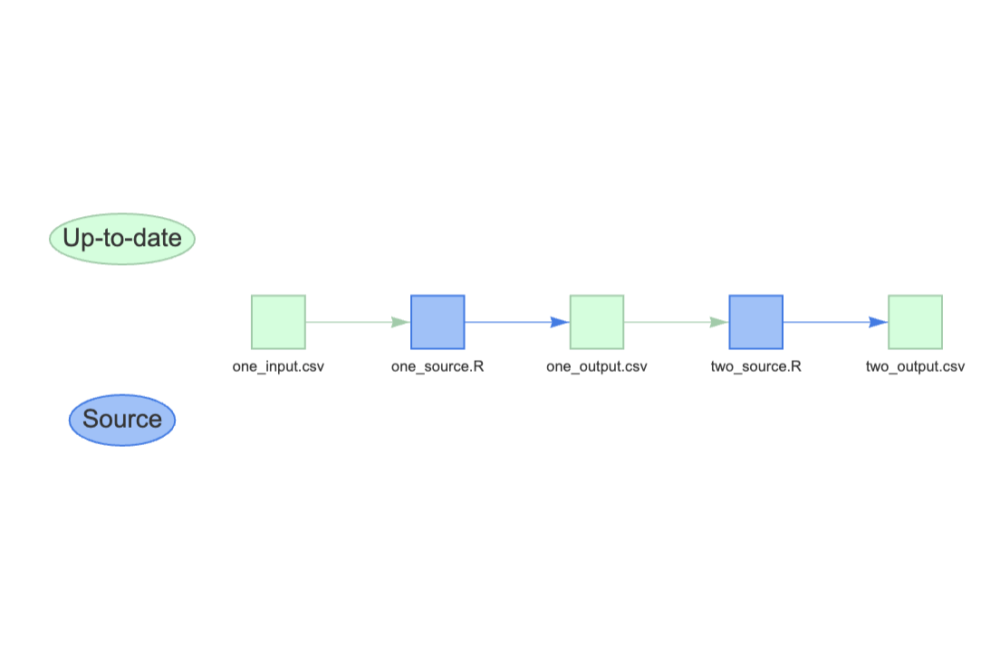
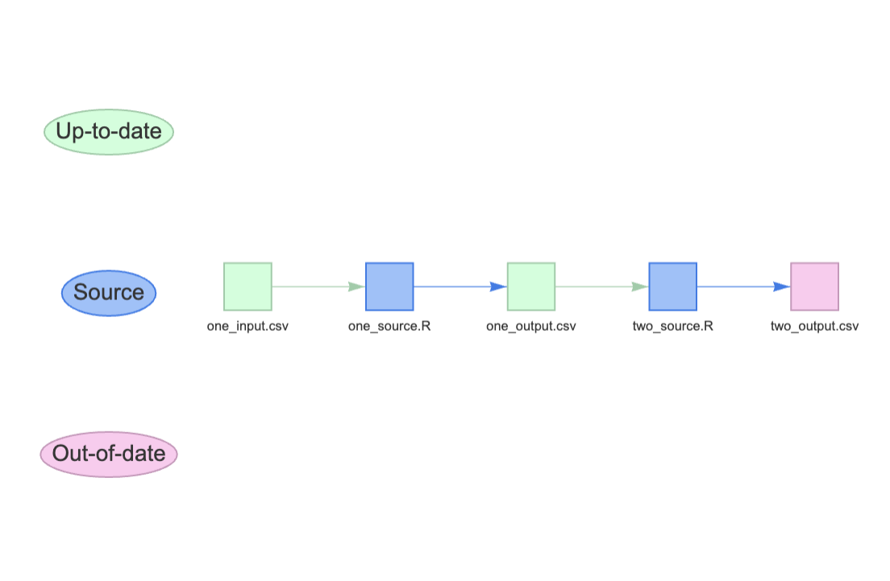

library(data.table)
# read data
dt = fread("./one_input.csv")
# process data
dt[, new_col := 1L]
# write data
fwrite(dt, file = "./one_output.csv")Abstract
In this blog I will demonstrate how you can use makepipe with Rmd-files, so that the dependencies (i.e. the necessary inputs of the workflow within the Rmd) and targets (i.e. the generated outputs of the workflow within the Rmd) don’t have to be known in advance, but are generated by using the exact same code that is used by the Rmd.
Short reminder what makepipe is all about
Standard workflow in data science
Data science workflows often consists of serveral scripts or functions that have to be executed in a certain order because they depend on one another. That means you have
one or more inputs (often data files which are generated by some batch, downloaded or created manually)
one or several outputs (these are the results of your computations and you write them to disk als CSV, XLSX, Rdata or parquet, just to name a few options)
What does makepipe has to offer
Tip
For a detailed description of what you can do with makepipe developed by Kinto Behr please go to
Behr K (2025). makepipe: Pipeline Tools Inspired by ‘GNU Make’. R package version 0.2.2, https://github.com/kinto-b/makepipe, https://kinto-b.github.io/makepipe/.
We will use the function makepipe::make_with_source to start a simple R-script that will read in some data, do a little processing and writing an output to disk. In order to do this the make_wih_source-function will need three attributes
sourcei.e. the R-scripttargetsi.e. the output-filedependenciesi.e. the input-file
So, our R-script will look like this:
In addition we have another script with has to run after one_source.R` because it’s input is the output of the first script.
library(data.table)
# read data
dt = fread("./one_output.csv")
# process data
dt[, newer_col := 2L]
# write data
fwrite(dt, file = "./two_output.csv")A simple example
Lets build a pipeline with theese two scripts
library(makepipe)
# first script
make_with_source(source = "./one_source.R",
note = "first script to run",
targets = "./one_output.csv",
dependencies = "./one_input.csv")
# second script
make_with_source(source = "./two_source.R",
note = "second script to run",
targets = "./two_output.csv",
dependencies = "./one_output.csv")
show_pipeline(as = "visnetwork")
As you can see all the r-scripts are run and the outputs are produced. If you run the pipeline a second time nothing will be done because alle targets are up-to-date.
Lets delete two_output.csv and look at the visualisation of the pipeline

If we now run the pipeline again
p = get_pipeline()
p$build()✔ Targets are up to date
✔ Targets are up to dateonly the second R-script is run and all targets are up-to-date again
How can makepipe work with rmarkdown
Problem definition
Most Rmarkdown-files (especially parametrisized Rmd-files) are in itself a kind of mini-pipeline, that is:
You have an input e.g.
a file-path for the input files or
a string by which the input file-paths are constructed;
You have several steps in your Rmd, e.g.
read input data
process data
calculate results
write results to disk
With this in mind our Rmd-File could look like that:
---
title: "RmdScript1"
params:
input: "./input.csv"
output: "./output.Rdata"
author: "Thomas Brand"
date: "`r Sys.Date()`"
output: html_document
---
```{r setup, include=FALSE}
knitr::opts_chunk$set(echo = TRUE)
library(rlang)
library(data.table)
```
# setup inputs and outputs
```{r get-inputs}
inputs = list()
inputs = append(inputs,
params$input %||% "./default_input.csv")
```
```{r get-outputs}
outputs = list()
outputs = append(outputs,
params$output %||% "./default_output.Rdata")
```
# do some stuff
## read data
```{r read-data}
dt = fread(inputs[[1]])
```
## manipulate data
```{r manipulate-data}
dt[, colDate := Sys.Date()]
```
# write output
```{r write-output}
save(dt, file = outputs[[1]])
```In order to use make_with_source or to be precise make_with_recipe (as Rmd is not an r-script) you could declare the params$input and params$output as your dependencies and targets that you pass on to the params attribute in the rmarkdown::render function, i.e
rmarkdown::render(input = "./RmdScript.Rmd",
output_file = "./RmdScript_report.html",
params = list(input = "input.csv",
output = "output.Rdata"))Thus we would have something like this
infile = "one_input.csv"
outfile = "output.Rdata"
make_with_recipe(
label = "Render Rmd",
note = "the code to render the Rmd",
recipe = {
rmarkdown::render(input = "./RmdScript.Rmd",
output_file = "./RmdScript_report.html",
params = list(input = infile,
output = outfile))
},
dependencies = infile,
targets = outfile,
)
Note
Please be aware that our target is not the rendered html-file of the Rmd, but an Rdata, that is written to disk by the Rmd. The html-file is just used as a protocol-file.
It would work, but is in my opinion cumbersome and, bare in mind, you would extract part of the logic of your mini-pipeline out of the Rmd-File.
And sometimes you would like to construct the filenames of the input- and output-files within your Rmd and just give a basename in the params, e.g.
---
title: "RmdScript1"
params:
basename: NULL
author: "Thomas Brand"
date: "`r Sys.Date()`"
output: html_document
---
```{r setup, include=FALSE}
knitr::opts_chunk$set(echo = TRUE)
library(rlang)
library(data.table)
basename = params$basename %||% "myfile"
```
# setup inputs and outputs
```{r get-inputs}
inputs = list()
inputs = append(inputs,
paste0("./",basename,".csv"))
```
```{r get-outputs}
outputs = list()
outputs = append(outputs,
paste0("./",basename,".Rdata"))
```
# do some stuff
## read data
```{r read-data}
dt = fread(inputs[[1]])
```
## manipulate data
```{r manipulate-data}
dt[, colDate := Sys.Date()]
```
# write output
```{r write-output}
save(dt, file = outputs[[1]])
```Solution
Let’s think of the chunks of an Rmd-File as Code-snippets, that we can evaluate and that produce certain values/variables. Ideally in the Rmd there is a chunk that will define all the input-files that are used in the Rmd and put them in a list called inputs . These will be our dependencies. The same goes for our outputs (targets) that are in a list called outputs.
We want to extract from the Rmd
the YAML-Header for the
params,the
setup- chunk to get all the necessary packages that are used,the
get-inputs- chunk to get the code to know the input-files andthe
get-outputs- chunk to get the code to know the output-files.
In order to do this we’ll have to build the Rmd with these chunk-names and make sure that they produce the afore mentioned lists.
After that we can execute the chunks in the correct order in a separate environment with the params - list of the YAML-header and extract the necessary variables.
Package parsermd
Tip
For a detailed description of what you can do with parsermd developed by Colin Rundel please go to
Rundel C (2024). parsermd: Formal Parser and Related Tools for R Markdown Documents. R package version 0.2.0, https://github.com/rundel/parsermd, https://rundel.github.io/parsermd/.
Note
We are using version 0.1.3 of parsermd, so we can’ use YAML-style chunk-options and will use the “classic” chunk-options-form!
What we intend to do will be taken care of by the parsermd-package. From this package we will need the functions
parse_rmd to get the list of the chunks of the Rmd
rmd_select to extract just certain chunks
rmd_source to run a set of chunks
The necessary code can look like this
library(parsermd)
# get the chunks of our Rmd
rmd = parse_rmd(rmd = "./RmdScript.Rmd")
# select just the named chunks, that we will use
rmdIO = rmd_select(rmd, "setup", "get-inputs", "get-outputs")
# set up an environment in which we will execute the chunks
envIO = new.env()
# extract the params-list of the YAML an put in into the environment
envIO$params = rmd_select(rmd,has_type("rmd_yaml_list"))[[1]]$params
# execute the selected code-chunks in the generated environment
rmd_source(rmdIO, local = envIO)
# extract the input ans output-files to get the targets and dependencies
input = unlist(envIO$inputs)
outputs = unlist(envIO$outputs)
Note
Sometimes you have some variables in the params of your YAML, that you wouldn’t explicitly set in your render-function because they are default values and just could be changed but wouldn’t be changed most times that you run that Rmd. You can do this with the function list_modify of the purrr-package
library(purrr)
l1 = list(a = 1,
b = "1",
c = 1:3)
l2 = list(b = "b",
d = 4:5)
combined_list = list_modify(l1, !!!l2)
combined_list$a
[1] 1
$b
[1] "b"
$c
[1] 1 2 3
$d
[1] 4 5Let’s put it all together
With this knowledge let’s construct a pipeline for the Rmd where we give just the basename as params.
library(parsermd)
Rmd_scriptname = "./RmdScript_basename.Rmd"
# get the chunks of our Rmd
rmd = parse_rmd(rmd = Rmd_scriptname)
# select just the named chunks, that we will use
rmdIO = rmd_select(rmd, "setup", "get-inputs", "get-outputs")
# set up an environment in which we will execute the chunks
envIO = new.env()
# generate the params that we will use to render the Rmd and put them into the environment
params = list(basename = "one_input")
envIO$params = params
# execute the selected code-chunks in the generated environment
rmd_source(rmdIO, local = envIO)
# extract the input ans output-files to get the targets and dependencies
inputs = unlist(envIO$inputs)
outputs = unlist(envIO$outputs)
# construct the pipeline
make_with_recipe(
label = "Render Rmd",
note = "the code to render the Rmd",
recipe = {
rmarkdown::render(input = Rmd_scriptname,
output_file = "./RmdScript_report.html",
params = params)
},
dependencies = inputs,
targets = outputs,
)Here we have
put the params for rendering the Rmd into an environment
run the chunks
setup,get-inputs,get-outputsin that environmentextracted the
inputs- andoutputs-lists from the environment anddeclared them as
dependenciesandtargetsof our piece of pipeline.
It just required to build your Rmds according to a certain template, which in my mind isn’t such a bad idea as it helps your future-self to make sense of the Rmds you have written more easily.